Chapter 2 [Lecture notes] Data visualizatie
- Vaak de eerste stap om zicht te krijgen op de data.
- Relatief eenvoudig om patronen te zien, maar minder geschikt om exacte waarden te zien.
- We moeten hierbij onderscheid maken tussen exploratieve visualisaties en informatieve visualisaties om een boodschap over te brengen.
- Exploratieve visualisaties dienen om snel inzicht te krijgen in patronen in de data. Men besteedt hierbij veel minder aandacht aan de opmaak van de visualisatie. Vaak is deze visualisatie tijdelijk en niet bedoeld voor communicatie naar derden.
- Communicatieve visualisaties dienen om een boodschap over te brengen aan derden. Hier dient men heel veel aandacht te besteden aan de opmaak zodat de boodschap duidelijk en helder gecommuniceerd wordt.
- We kunnen bij exploratieve visualisaties een onderscheid maken tussen univariate, bivariate en multivariate visualisaties.
De grafieken in dit hoofdstuk zijn gebaseerd op volgende dataset omtrent vluchten vertrekkende uit New York.
## Rows: 329,174
## Columns: 7
## $ luchthaven <fct> EWR, LGA, JFK, LGA, EWR, EWR, LGA, JFK, LGA, JFK, ~
## $ maatschappij <chr> "United Air Lines Inc.", "United Air Lines Inc.", ~
## $ datum <dttm> 2013-01-01 05:15:00, 2013-01-01 05:29:00, 2013-01~
## $ vertrek_vertraging <dbl> 2, 4, 2, -6, -4, -5, -3, -3, -2, -2, -2, -2, -2, -~
## $ aankomst_vertraging <dbl> 11, 20, 33, -25, 12, 19, -14, -8, 8, -2, -3, 7, -1~
## $ afstand <dbl> 1400, 1416, 1089, 762, 719, 1065, 229, 944, 733, 1~
## $ vliegtijd <dbl> 227, 227, 160, 116, 150, 158, 53, 140, 138, 149, 1~2.1 Perceptual ranking
Niet alle elementen waarmee een visualisatie wordt opgebouwd zijn even makkelijk accuraat ge begrijpen.
Geordend van meest accuraat naar minst accuraat
- Positie op gemeenschappelijke schaal
- Positie op (identieke) niet-gemeenschappelijke schalen
- Lengte
- Richting, helling & hoek
- Oppervlakte
- Volume
- Schaduw en saturatie
- Kleur
In realiteit complexer dan bovenstaande ranking
- ook link met type variabele
- e.g. kleur werkt beter met nominale variabele dan met continue variabele
Perceptie is niet altijd het meest belangrijke - data visualizatie als kunstvorm - sommige elementen van een grafiek zijn belangrijker (liefst hoog op percentie ranking) dan andere (mogen lager op ranking)
Perceptie vs visuals - geen 1 op 1 relatie: keuze van uitwerking visual bepaald waar op de perceptuele ranking je je bevindt - niet alles in een visualisatie heeft een gelijkwaardige perceptuele ranking
2.2 Gestaltprincipes
Principes die helpen bepalen hoe we visuele elementen waarnemen
- Proximity: elementen dichter bij elkaar behoren tot dezelfde groep
- Similarity: we groeperen elementen op kleur, vorm, richting, etc.
- Enclosure: begrensde objecten worden ervaren als groep
- Closure: neiging om hiaten te negeren en mentaal aan te vullen
- Continuity: elementen op één lijn, of elementen die elkaar voorzetten, worden als groep gezien
- Connection: verbonden elementen worden als groep gezien
Preattentative processing = gebruik van deze principes op de nadruk op bepaalde elementen te leggen: contracts creëren.
2.3 Data Visualization Pitfalls
Data Visualizatie kan bepaalde cognitieve biasen versterken
- Framing: het vertellen van een bepaald verhaal kan worden verstrekt door een data visualisatie, waardoor vergeten wordt de context van een andere hoek te benaderen.
- Availability: makkelijker toegankelijke informatie wordt beschouwd als belangrijker/relevanter. Door visualizaties wordt dit versterkt
- Overconfidence: meer vertrouwen in grafisch informatie
- Anchoring: wanneer verwachtingen overmatig worden gebaseerd op bepaalde eikpunten. In visualisatie kan dit worden gedaan met een bepaalde configuratie van assen of annotaties.
- Confirmation bias: visualisaties kunnen bevestigend werken in het licht van eerdere informatie. Kritisch blik en andere perspectieven blijven nodig.
2.4 Univariate visualisaties (1 variabele)
- Als we slechts 1 variabele bestuderen, dan zijn we voornamelijk geïnteresseerd in de spreiding van de data. Dit wordt de verdeling van de data genoemd.
- Welke vragen kunnen we beantwoorden met dit soort visualisaties?
- Wat is de meest voorkomende waarde van de data? Dit wordt ook de modus genoemd.
- Bezit de data 1 modus, i.e. 1 waarde die duidelijk dominant is, of meerdere modi?
- Indien er slechts 1 afgetekende modus is, dan wordt de verdeling unimodaal genoemd.
- Indien er meerdere modi zijn (dominante waarden), dan wordt de verdeling multimodaal genoemd.
- Een multimodale verdeling kan er op wijzen dat de objecten in je data niet allemaal van hetzelfde type zijn en dat je in feiten twee populaties in je data aanwezig hebt.
- Is de data geconcentreerd rond de modus of eerder breed verspreid. Met andere woorden, wat is de spreiding? Dit geeft inzicht in de variabiliteit van de data.
- Is de data gelijkmatig verdeeld aan weerszijden van de modus of zien we duidelijk meer data aan één zijde van de verdeling? Indien er meer data aan één zijde van de verdeling ligt (ten opzichte van de modus) dan zegt men dat de verdeling asymetrisch verdeeld is.
- Zijn er waardes die opmerkelijk ver van de modus verwijderd zijn en geïsoleerd zijn van andere observaties? Dit worden extreme waarden of outliers genoemd. Deze verdienen meestal extra aandacht.
2.4.1 Categorische variabele
2.4.1.1 Staafdiagram
- Op de X-as staan de verschillende waardes van de categorische variabele. (Fig. 2.1)
- Bij iedere waarde tekenen we een verticale balk die aangeeft hoe vaak die waarde in de dataset voorkomt.

Figure 2.1: Staafdiagram luchthavens
- Minder geschikt indien er veel waarden zijn. Dan wordt de X-as snel onleesbaar.(Fig. 2.2)

Figure 2.2: Staafdiagram maatschappijen
- Je kan natuurlijk de labels roteren. Maar dit kan nog steeds onhandig zijn om te lezen. (Fig. 2.3).
Figure 2.3: Staafdiagram met geroteerde labels
- In geval van een nominale variabele zijn er twee mogelijkheden om de waarden te rangschikken:
- Alfabetisch. (standaard) Dit is handig om snel waarden terug te vinden.
- Volgens frequentie. Dit is handig om snel te zien welke waarden vaak/weinig voorkomen en geeft ook een beter beeld van de verdeling van de waarden. (Fig. 2.4)

Figure 2.4: Staafdiagram gesorteerd op frequentie
In het geval van een ordinale variabele houd je best de intrinsieke volgorde van de waarden aan.
Je kan ook een horizontaal staafdiagram maken. (Fig. 2.5)
- Zelfde principe, maar dan met horizontale balken.
- Is handiger om de verschillende waarden te lezen, vooral indien dit er veel zijn.

Figure 2.5: Verticaal staafdiagram gesorteerd op frequentie
2.4.1.2 Dotplot
In plaats van balken te gebruiken om de frequentie van een waarde aan te geven, kan je dit ook met punten doen. (Fig. 2.6)
Een dotplot laat duidelijker zien waar de sprongen in de verdeling zit. Daarom is de dotplot vooral relevant als je de waarden ordent volgens frequentie.

Figure 2.6: Dotplot maatschappij
Net als de barplot kan je zowel een verticale als horizontale dotplot maken. (Fig. 2.7)
Figure 2.7: Verticale dotplot
2.4.1.3 ‘Stacked’ staafdiagram
- We maken nu slechts 1 kolom. Iedere waarde is een andere kleur en neemt een deel van de balk in beslag. De volledige balk stelt 100% van de data voor. (Fig. 2.8)
- Kan nuttig zijn om data cumulatief te bestuderen.
- Hiermee kunnen we vragen beantwoorden zoals: “Welke waarden moeten we nemen om met zo weinig mogelijk waarden x% van de objecten te hebben?”

Figure 2.8: Stacked barplot
- We kunnen ook horizontale versies maken. (Fig. 2.9)

Figure 2.9: Horizontale stacked barplot
- Univariate stacked barcharts kunnen soms wat raar overkomen. Vaak komt een gewone barchart beter over.
2.4.1.4 Andere soorten
- treemap: indelen van rechthoekige oppervlakte volgens categorische variabelen
- pie chart
- Moeilijk te interpreteren.
- Verschillen tussen waarden zijn enkel duidelijk bij grote verschillen, terwijl barplots en dotplots deze ook bij kleine verschillen kunnen tonen.
- Voor cumulatieve analyses van de data zijn barplots beter omdat het hier eenvoudiger is om af te leiden waar x% zicht bevindt.
2.4.2 Continue variabele
2.4.2.1 Histogram
- Analoog met barplot, alleen gaan we hier eerst onze “categorieën” definiëren. (Fig. 2.10)
- Dit wordt ‘binning’ genoemd en wordt bepaald door een bin-breedte te kiezen.
- Je kan de binbreedte rechtstreeks kiezen of bepalen door vast te leggen hoeveel categorieën/bins je wenst.

Figure 2.10: Histogram with binwidth 1000
- Voor de visualisatie, worden alle waarden gegroepeerd per ‘bin.’
- De binbreedte kan een enorme impact hebben op het uitzicht van de verdeling. (Fig. 2.11 - 2.12)
- Hoe breder de bins, hoe minder modi je kan detecteren.
- Hoe smaller de bins, hoe meer modi je gaat zien, hoewel dit niet altijd even betekenisvol is.
- Hoe smaller de bins, hoe minder data er in iedere bin gaat zitten en dan kunnen patronen wel in jouw dataset bestaan maar louter ten gevolge van toeval.

Figure 2.11: Histogram with binwidth 250

Figure 2.12: Histogram with binwidth 50
2.4.2.2 Density
- Variant van histogram.
- In plaats van staven wordt er een curve getekend. (Fig. 2.13)
- De oppervlakte onder de curve is steeds gelijk aan 1
- Hoe hoger de curve, hoe meer observaties ter hoogt van deze waarde (hoe hoger de densiteit)
- De waarde van de y-as heeft geen directe betekenis.

Figure 2.13: Density plot
2.4.2.3 Boxplot
- De lijn in het midden duidt de mediaan aan. Dit betekent dat 50% van je data onder deze lijn ligt, terwijl 50% er boven ligt. (Fig. 2.14)
- De box in het midden duidt de middelste 50% van je data aan. Dit wordt ook de interkwartiel-box genoemd. Dit betekent dat 25% van je data onder deze box zit en nog eens 25% boven deze box ligt. Hoe groter de box, des te meer de data gespreid is.
- Indien de box aan één zijde van de mediaanlijn groter is dan aan de andere zijde, dan wijst dit er op dat de data meer gespreid is aan die kant.
- De “whiskers” geven de laatste datapunten aan die als “normaal” beschouwd worden. Datapunten buiten deze grenzen beschouwt een boxplot als outliers of extreme waarden.
- De grens waar data van normaal naar extreem overgaat wordt door de boxplot bepaald door anderhalf keer de grootte van de interkwartiel-box op te tellen (en af te trekken) van de bovenste (onderste) grens van de interkwartiel-box. Punten die hier buiten liggen zijn outliers en worden als aparte punten aangeduid. De uitersten van de whiskers duiden de laatste datapunten aan binnen deze grenzen.

Figure 2.14: Verticale boxplot vertrekvertraging
- Het is niet abnormaal dat er outliers in je data aanwezig zijn.
- Bij normaal verdeelde data zal je gemiddeld 7 outliers per 1000 datapunten mogen verwachten.
- Een normale verdeling is een bepaalde manier waarop data waarden verdeeld kunnen zijn die in de realiteit vaak voorkomt.
- Indien je echter veel meer outliers ziet op je boxplot visualisatie, dan is de kans reëel dat er meer aan de hand is:
- Er zijn bijvoorbeeld systematische meetfouten
- De objecten in je data zijn in feite op bepaalde aspecten significant verschillend waardoor je ze apart zou moeten bestuderen.
- Je kan een boxplot ook roteren. (Fig 2.15)
- Boxplots komen beter tot hun recht bij bivariate analyses dan bij univariate analyses.
Figure 2.15: Horizontale boxplot vertrekvertraging
2.4.2.4 Violin plot
- Een violin plot kan je beschouwen als een combinatie van een histogram en een boxplot. (Fig. @ref(fig:2_10a))
- Net als bij een boxplot wordt op verticale wijze getoond hoe de data verspreid is.
- Opnieuw kan je ervoor kiezen de grafiek te roteren. (Fig. @ref(fig:2_10b))
- Net als bij een histogram kan je goed zien waar het volume (de massa) van de data zich bevindt.
- Net als bij een histogram kan je detecteren hoeveel modi de data bezit.
- In tegenstelling tot de boxplot, kan je bij een violinplot wel niet duidelijk zien waar bijvoorbeeld het ‘midden’ van je data is.
Figure 2.16: Verticale violin plot afstand

Figure 2.17: Horizontale violin plot vertrekvertraging
2.4.2.5 Jitter plot
- puntenwolk waarbij willekeurige “noise” (ruis) wordt toegevoegd.
- de ruis zorgt ervoor dat datapunten niet overlappen, en dat het duidelijk is waar de massa zich bevindt.
- Fig. 2.18 toont een vergelijking van violin, boxplot, point en jitter plot.
 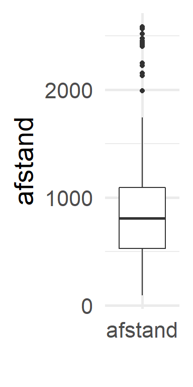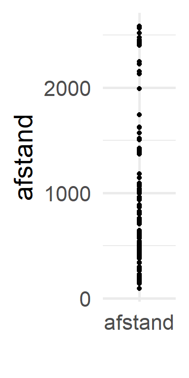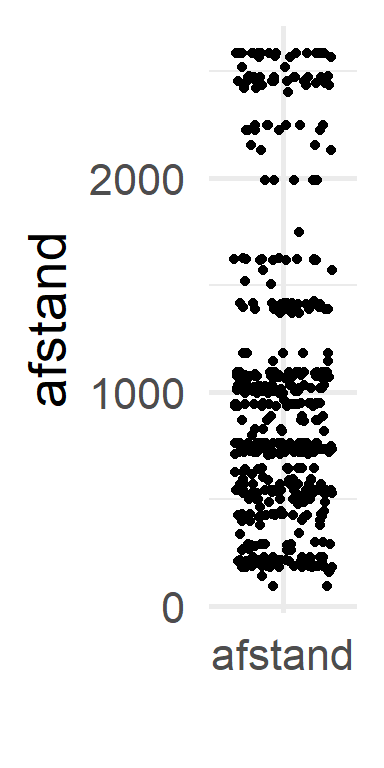
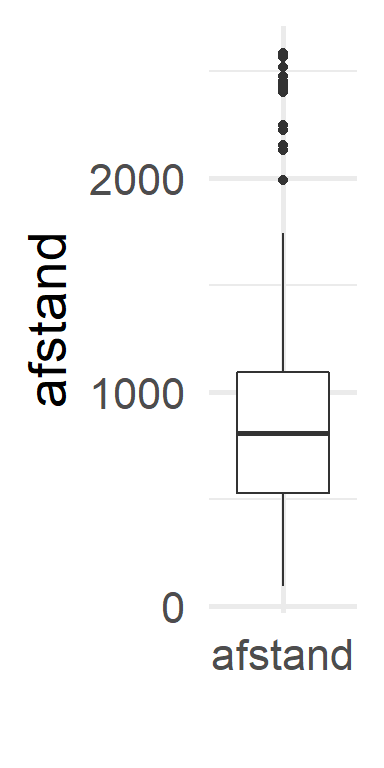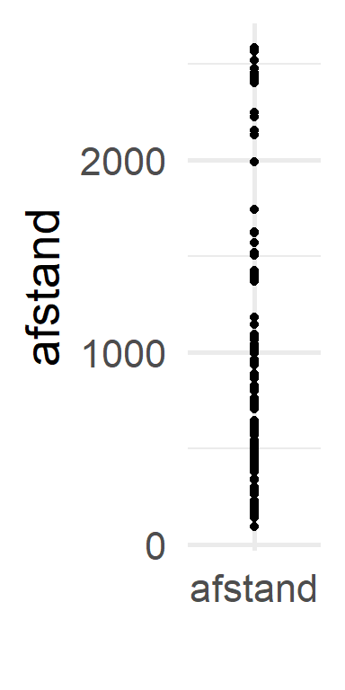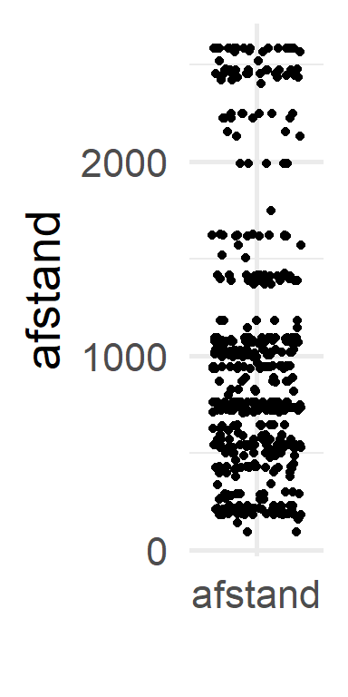
Figure 2.18: Violin, boxplot, point en jitter
2.5 Bivariate visualisatie (2 variabelen)
- Wanneer we de relatie tussen 2 variabelen bekijken is het eenvoudig te denken in oorzaak en gevolg termen.1
- De variabele die we het label “oorzaak” geven, zullen we voortaan “onafhankelijke variabele” noemen.
- De variabele die we het label “gevolg” geven, zullen we voortaan “afhankelijke variabele” noemen.
- Waar we eigenlijk in geïnteresseerd zijn bij een visualisatie van 2 variabelen is de impact van de onafhankelijke variabele op de afhankelijke variabele weer te geven.
- Alle vragen die we kunnen stellen bij de visualisatie van één variabele, kunnen we nog steeds stellen, met telkens de bijkomende vraag of het waargenomen patroon verandert als de onafhankelijke variabele van waarde verandert.
2.5.1 Situatie 1: De onafhankelijke variabele is categorisch
Indien de afhankelijke variabele een continue variabele is kan je:
- meerdere boxplots op 1 grafiek visualiseren, met telkens 1 boxplot per waarde van de onafhankelijke variabele. (Fig. 2.19)

Figure 2.19: Bivariate boxplot
- meerdere violinplots op 1 grafiek tonen, met telkens 1 violinplot per waarde van de onafhankelijke variabele. (Fig. 2.20)

Figure 2.20: Bivariate violin plot
- meerdere histogrammen op 1 grafiek tonen
- Hiervoor gebruiken we facetten: we tekenen voor elke waarde van de onafhankelijke variabele een apart assenstelsel. (Fig. 2.21)
Figure 2.21: Bivariate histogram plot
- meerdere density plots
- Hiervoor kunnen we facetten gebruiken, ofwel de density plots over elkaar tekenen en onderscheiden met kleur. (Fig. 2.22-2.23)

Figure 2.22: Bivariate density plot - apart
 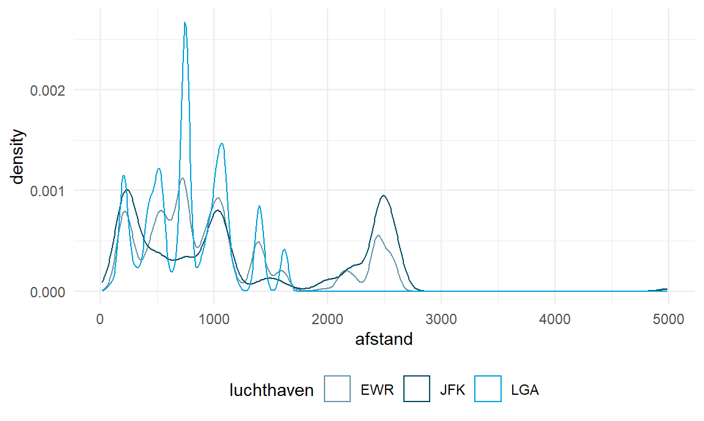
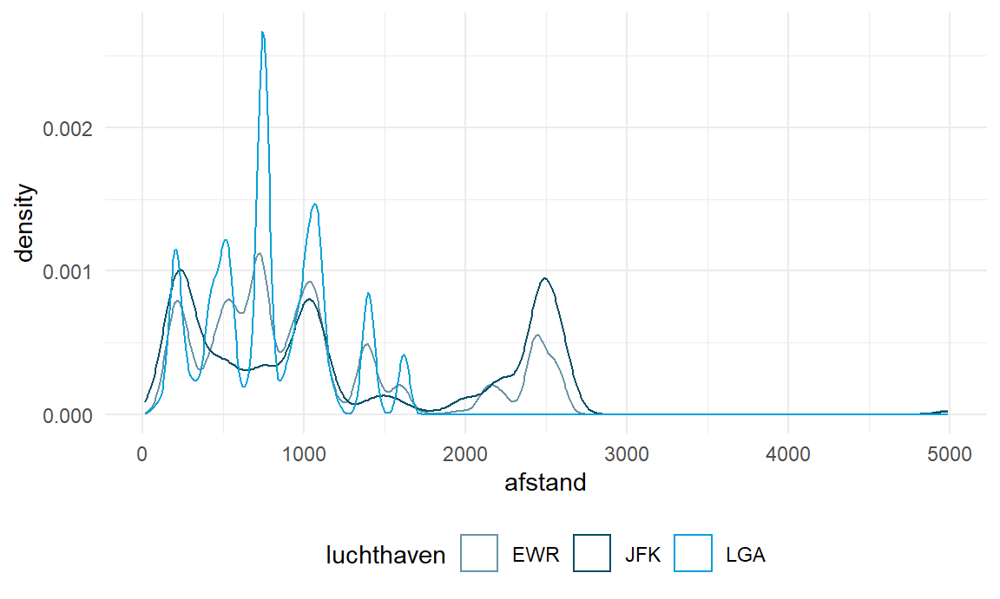
Figure 2.23: Bivariate density plot - overlappend
Indien de afhankelijke variabele een categorische variabele is:
- Kan je meerdere barplots op 1 grafiek visualiseren, met telkens de bars gegroepeerd per waarde van de onafhankelijke variabele.

Figure 2.24: Bivariate barplot
- Kan je meerdere stacked barplots op 1 grafiek plaatsen, met telkens een volledige stack per waarde van de onafhankelijke variabele.
Figure 2.25: Bivariate stacked barplot
- Kan je een heatmap (of tile plot) gebruiken. Hier bij plaats je 2 categorische variabelen op de x-as en y-as, respectivelijk.
- Voor elke combinatie van waarden is er een tegel die je kan inkleuren volgens de frequentie van de combinatie.

- Je kan bijkomende ook de exacte waarde in elke tegel plotten.
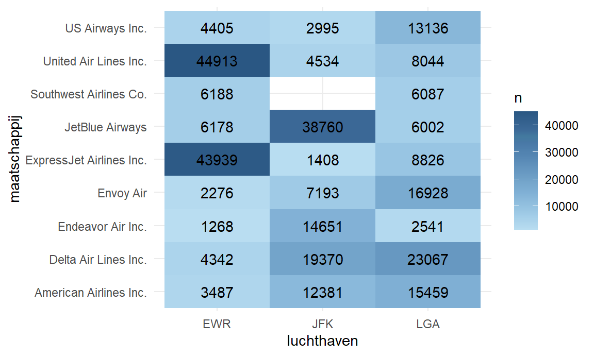
Let op wanneer beide variabelen categorisch zijn, is het nog steeds van belang welke je beschouwd als afhankelijke en welke als onafhankelijke. Technisch kan je ze omdraaien, maar de betekenis van je visualizatie is niet dezelfde!
 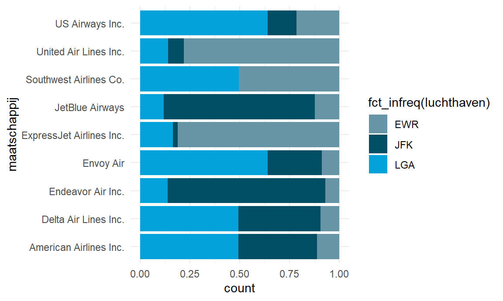
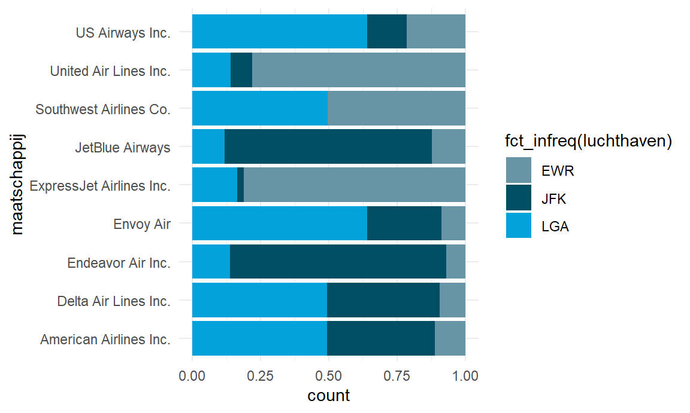
Figure 2.26: Twee verschillende stacked barcharts van luchthaven en maatschappij.
Andere mogelijkheden:
- treemap (Fig. 2.27)
Figure 2.27: Treemap luchthaven en maatschappij.
- mosaic plot (Fig. 2.28)
Figure 2.28: Mosaic plot luchthaven en maatschappij.
2.5.2 Situatie 2: De onafhankelijke variabele is continue
In dit geval kan je geen aparte plot per mogelijke waarde van de onafhankelijke variabele maken omdat er mogelijk oneindig veel waarden zijn.
Indien de afhankelijke variabele continu is, dan kan je een scatterplot maken.
- Iedere observatie is een punt in je grafiek, waarbij de x-waarde op de grafiek overeenkomt met de waarde van de onafhankelijke variabele en de y-waarde op de grafiek overeenkomt met de waarde van de afhankelijke variabele.

Figure 2.29: Scatterplot
- Om patronen beter te herkennen kan je een “trend-lijn” toevoegen.

Figure 2.30: Scatterplot met trendlijn
- Bij scatterplots is er gevaar voor overplotting
- Mogelijke oplossingen
- 2D histogram: verdeel veld op in vierkante bins en tel per bin hoeveel data punten er zijn
- Hexplot: analoog, maar gebruik zeshoekige bins ipv vierkanten. Voordeel: punten binnen elke zeshoek liggen dichter bij het middelpunt van de bin.

Figure 2.31: Scatterplot met trendlijn
Figure 2.32: Hexplot met trendlijn
Indien de afhankelijke variabele categorisch is, dan kan je niet rechtstreeks een betekenisvolle plot maken omdat er waarschijnlijk te weinig datapunten zijn voor iedere mogelijke waarde van de onafhankelijke variabele.
- Wat je dan best kan doen, is de onafhankelijke continue variabele categorisch maken door deze in te delen in bins/intervallen. En dan ben je terug in de situatie waarbij de onafhankelijke variabele categorisch is. We komen hierop terug in het hoofdstuk over Data Voorbereiding.
2.5.3 Situatie 3: De onafhankelijke variabele is tijd
- Tijd kunnen we zien als continue variabele
- Bijgevolg zelfde grafieken mogelijk als wanneer onafhankelijke variabele continue is
- Tijd + continue afhankelijk -> scatterplot, 2D histograms, hex bins
- Tijd + categorisch afhankelijk -> probleem: tijd categoriseren (zie verder).
- Bijgevolg zelfde grafieken mogelijk als wanneer onafhankelijke variabele continue is
- Wanneer we één enkele variabele voorstellen doorheen de tijd is er per tijdseenheid maar 1 data punt. Hieronder wordt de gemiddelde vertrekvertraging per dag getoond.

Figure 2.33: Puntenwolk met tijd op x-as
In dat geval is het beter om in plaats van punten een lijngrafiek te gebruiken.

Figure 2.34: Lijngrafiek
Indien je een beperkt aantal punten hebt (hieronder bijvoorbeeld één maand van de vluchtgegevens) kan je ervoor kiezen om zowel punten als lijnen te tonen. Op die manier is het makkelijker individuele data punten af te lezen.

Figure 2.35: Lijn grafiek met punten
Indien we veel datapunten hebben, wat hier het geval is, kan een lijngrafiek zeer chaotisch worden. We kunnen daarom ervoor kiezen om onze tijd in te delen in categoriëen. Bijvoorbeeld, in plaats van de dagelijkse gemiddelde vertrekvertraging, kunnen we de gemiddelde vertrekvertraging per maand berekenen en tonen.

Figure 2.36: Lijngrafiek van gemiddelde vertrekvertraging per maand.
- Op dit moment verliezen we daardoor wel veel informatie. Maar we kunnen dit nu ook beschouwen als een visualizatie van een categorische variabele (maand) t.o.v. een continue. Waardoor we de technieken voor dit type bivariate visualizaties kunnen toepassen. Bijvoorbeeld boxplots. We zien nu zowel de algemene trend als outliers. In februari was er bijvoorbeeld een dag waar de gemiddelde vertraging ver boven de normale trend lag.

Figure 2.37: Boxplots van gemiddelde dagelijske vertrekvertraging voor elke maand.
- Wanneer we de tijd gecategoriseerd hebben kunnen we ook categorische variabelen weergeven als afhankelijke. Bijvoorbeeld, zijn er verschillen in het aantal vluchten per maatschappij doorheen de tijd. We kunnen hier dezelfde types grafieken als voor bivariate cat+cat visualizaties gebruiken, bijvoorbeeld stacked barcharts.
Figure 2.38: Verdeling van aantal vluchten over maatschappijen per maand.
- We kunnen categorizeren op maand, jaar, etc. Maar ook op tijdspecifiekere kenmerken, zoals bijvoorbeeld de dag van de week
Figure 2.39: Verdeling van aantal vluchten over maatschappijen per dag van de week.
- Of het uur van de dag

Figure 2.40: Verdeling van aantal vluchten over maatschappijen per vertrekuur.
2.6 Multivariate visualisaties (meer dan 2 variabelen)
- Datavisualisatie van patronen tussen meer dan 2 variabelen worden snel te complex om te interpreteren.
- Het basisprincipe is wel eenvoudig.
- Je hebt typisch 1 afhankelijke variabele (Y) en een aantal onafhankelijke variabelen (A, B, …).
- Je visualizeert eerst Y en A (bivariaat)
- Je voegt dan de volgende variabelen (B, c, …) stap voor stap toe aan de grafiek.
- Door de bivariate grafiek te herhalen in verschillende facetten (een voor elke waarde van B).
- Door verschillende kleuren te gebruiken voor elke waarde van B
- Bij multivariate visualisaties zijn er afhankelijk van de data types oneidig veel mogelijke grafieken die je kan maken.
- Het is vaak afhankelijk van de data welke grafiek het “best past”
- Enkel wanneer de onafhankelijk variabele continu is zijn de keuzes beperkt en ben je vaak genoodzaakt om deze om te zetten naar categoriëen.
2.6.1 Voorbeeld: In welke mate hangt de vertrek vertraging af van de luchthaven en de afstand?
Stap 1. Vertraging vs. afstand
- Beide continue: scatterplot
Figure 2.41: Vertrekvertraging vs afstand
Stap 2. Voeg invloed van luchthaven toe.
- Optie 1: gebruik kleur om de verschillende luchthavens te differenteren. Een trendlijn kan hier helpen.
Figure 2.42: Vertrekvertraging vs afstand en luchthaven
Geen geweldig resultaat in dit geval.
Optie 2: Gebruik facetten voor de verschillende luchthavens.
Figure 2.43: Vertrekvertraging vs afstand en luchthaven
- Optie 3: Facets, maar gebruik hex bins
Figure 2.44: Vertrekvertraging vs afstand en luchthaven, hexbins
2.6.2 Voorbeeld: multivariaat tijd
2.6.2.1 Situatie 1: Variabelen hebben dezelfde eenheid.
Voorbeeld: vertrekvertraging en aankomstvertraging. Je kan lijngrafieken tekenen met meerdere lijnen op hetzelfde assenstelsel.

Figure 2.45: Evolutie van 2 variabelen over tijd in één grafiek (zelfde meeteenheid)
- Of je kan er voor kiezen elke lijn in een afzonderlijk paneel te tonen

Figure 2.46: Evolutie van 2 variabelen over tijd in afzondelijke panels.
2.6.2.2 Situatie 2: Variabelen hebben niet dezelfde eenheid
Voorbeeld: de gemiddelde levensverwachting en gdp per capita doorheen de tijd. In dit geval ben je genoodzaakt 2 panelen te gebruiken.
Figure 2.47: Evolutie van 2 variabelen met andere eenheden in afzonderlijke panels.
Optie 2: Maak een connected scatterplot. Toon een punt voor elke meting, waarbij x en y elk een variabele voorstellen. Verbindt dat elk punt in chronologische volgorde.

Figure 2.48: Evolutie van 2 variabelen (levensverwachting en inkomen per capita) aan de hand van connected scatterplot.
Variant, per continent:
Figure 2.49: Evolutie van 2 variabelen aan de hand van connected scatterplot - verschillende groepen.
2.7 Visualisaties voor communicatie
Wanneer uiteindelijk beslist om een visualizatie te gebruiken om te communiceren, zorg ervoor dat
- de grafiek leesbaar is
- je kleur enkel gebruikt waar nodig.
- je correcte as-labels gebruikt
- je geen theme gebruikt dat te druk/overheersend is
- je een gepaste titel voorziet.


2.8 How charts lie
2.8.1 Causaliteit vs correlatie
- Van zodra er twee (or meer) variabelen zijn, gaan we op zoek naar patronen in relaties tussen de variabelen.
- Het is belangrijk en essentieel te beseffen dat mensen een automatische reflex hebben om te denken in termen van oorzaak-gevolg als we kijken naar relaties tussen twee variabelen.
- Het is echter niet omdat er een duidelijke relatie bestaat tussen twee variabelen (correlatie), dat hier sprake is van een oorzaak-gevolg verband (causaliteit).
- Bijvoorbeeld: Indien in de zomer de verkoop van paraplu’s sterk stijgt, dan zal de graanopbrengst in het najaar dalen. Dit betekent niet dat de verkoop van paraplu’s een impact heeft op de graanopbrengst. Wat hier waarschijnlijk gebeurt, is dat door hevige regenval in de zomermaanden, de verkoop van paraplu’s is toegenomen en de graanoogst tegenvalt.
- Soms is het intuïtief zeer onwaarschijnlijk dat de waargenomen correlatie causaliteit impliceert. Kijk hiervoor maar eens naar de voorbeelden op http://www.tylervigen.com/spurious-correlations
- Wanneer het echter plausibel is dat de waargenomen correlatie causaliteit voorstelt, is het belangrijk dat we tegen onze natuurlijke reflex in gaan en niet in termen van oorzaak-gevolg denken.
- Het aantonen van causaliteit is nooit mogelijk met descriptieve en exploratieve data analyse!